Becker Vacuum Pump Oil and Regenerative Blowers Businesses and facilities looking to improve their centralized air systems should strongly consider Becker’s products. Becker specializes in the production of regenerative blowers and vacuum pumps as well as vacuum pump oil and grease. They offer a wide variety of regenerative blowers and pumps and diverse selection of … Continue reading “Vacuum Pump Oil”

Used Cranes For Sale | Tom Kasner Crane Sales Inc. If you are looking for used cranes for sale or you are looking to sell a crane, Tom Kasner Crane Sales Inc. is exactly who you need. Offering a myriad of makes and models, Tom Kasner can help you buy or sell cranes and equipment … Continue reading “Used Cranes For Sale”

Jaco Plastic Products | Glastherm Are you having trouble finding reliable plastic companies that produce glastherm products? If so, you have finally found the solution to your plastic product needs. Jaco is a highly experienced plastics manufacturer that has a variety of glastherm products: Glastherm® HT 550° F, Glastherm® HT220, and Glastherm® HT250 are a few options they offer. … Continue reading “Glastherm”

Qualiform | Rubber Molding Supplier Those searching for a rubber molding supplier to provide high-quality custom rubber products will find exactly what they need with Qualiform Inc. Qualiform is a rubber products manufacturer with many years of experience in the industry. Furthermore, they specialize in the production of custom rubber products; thus, they can offer … Continue reading “Rubber Molding Supplier”

Great Beginnings Pediatric Dentistry | My Kids Dentist If you searched “My Kids Dentist” hoping to find the perfect dentist for your children, you have found them. Great Beginnings Pediatric Dentistry specializes in helping children become more comfortable with the dentist. The staff works to build a welcoming and comfortable environment for children. Curiosity is … Continue reading “My Kids Dentist”

Zerust Rest-Resistant Bike Cover A bicycle’s lifespan can be impacted significant by rust. Your bike will not last nearly as long as it could without the proper protection. Cyclists everywhere can benefit from the Zerust Rust-Resistant Bike Cover. Zerust products eliminate the chemical reactions that cause corrosion. Whether your bicycle is a high-end racing cycle … Continue reading “Bike Cover”

Zerust Tool Box Liner Tools are always susceptible to rust and corrosion; thus, protective measures must be taken to increase their lifespan and reliability. Zerust creates products that defend against rust damage safely and efficiently. The Zerust Tool Box Liner is the best option for protecting your tools from corrosion. Eliminating rust has never been … Continue reading “Tool Box Liner”

Motorcoach Driver Training Courses Are you looking for comprehensive Motorcoach Driver Training Courses? The Motorcoach Safety Training Company has developed a course package that will teach you everything you need to know. With MCSTCO, you can get it right the first time, learning how to drive a motorcoach safely and smoothly. Their motorcoach safety courses … Continue reading “Motorcoach Driver Training Courses”

Becker Air System Machinery | Industrial Vacuum Pumps Many facilities have centralized air systems that are extremely loud and noisy, yet they are doing much less work than the noise suggests. Efficiency is incredibly important for air systems, and with inefficient technology, businesses are losing money. Fortunately, Becker offers a large variety of industrial vacuum … Continue reading “Industrial Vacuum Pumps”

Becker Air System Machinery| Rotary Vane Vacuum Pumps Is your facility’s centralized air machinery extremely loud yet surprisingly inefficient? Becker offers the best solutions for any issues with air system technology. They have extensive experience in the design and manufacturing of this machinery. Becker offers many models and versions of rotary vane vacuum pumps, regenerative … Continue reading “Rotary Vane Vacuum Pumps”

Zerust Table Saw Rust Prevention Cover If you have any possessions that contain metal, they susceptible to corrosion and rust damage. Getting the longest lifespan out of your belongings requires taking protective measures against corrosion. Zerust’s rust prevention products are the most reliable defense against rust damage. Whether it’s table saws, bicycles, jewelry, tackle, or … Continue reading “Table Saw Rust Prevention Cover”

Becker Rotary Vane Pumps Becker is the best solution for businesses and facilities looking to improve their centralized air systems. They specialize in the design and production of rotary vane pumps, regenerative blowers, vacuum pump oil and more. With their wide selection of models and products, Becker is a leader of versatility for the industry, … Continue reading “Rotary Vane Pumps”

Copperloy Loading Dock Ramps Freight-loading facilities all over the country depend on their equipment to drive the productivity of their operation. Efficiency hinges on the quality of the equipment at the facility and is one of the most pivotal aspects of any loading dock. Warehouse equipment needs to be reliable, stable, and safe; however, if … Continue reading “Loading Dock Ramps”

Dealing with e Waste When protecting your technology, it is necessary to be conscious of more than just your current devices. Securing your information means you must also consider your older technology, as it could be a security risk. Old, unused technology is called “e Waste.” It is likely that your office has a significant … Continue reading “e Waste | QualityIP”

Northeast Ohio Juvenile Defense Lawyer | Cameron B. Pedro If your child is facing a criminal charge, you need a juvenile defense lawyer that will provide zealous representation to protect your child’s rights. Cameron B. Pedro can guide you through the entire process, providing legal counsel and protecting you family. No one should attempt to … Continue reading “Juvenile Defense Lawyer”

Davis Law Group LLC | Business Attorney Akron Ohio If you want the best business attorney Akron Ohio has to offer, look no further. The Davis Law Group LLC has an experienced team of business lawyers who will work tirelessly to ensure your success. Building a business requires extensive knowledge and bravery; however, creating a … Continue reading “Business Attorney Akron Ohio”

Cameron B. Pedro | OVI / DUI Lawyer Wadsworth Ohio Anyone in Wadsworth that is facing a DUI charge should contact an attorney immediately. When there is a possibility of conviction, you need a lawyer to provide guidance and legal counsel. Cameron B. Pedro, OVI / DUI Lawyer Wadsworth Ohio, has helped many clients defend … Continue reading “OVI / DUI Lawyer Wadsworth Ohio”

Copperloy Portable Yard Ramps The success of a freight-loading facility hinges on the reliability of the equipment. All warehouse equipment needs to safe, functional, and efficient, and if these expectations are not met, the facility could suffer in terms of overall productivity. Learn more about yard ramps. Yard ramps are an integral part of a … Continue reading “Portable Yard Ramps”

Cameron B. Pedro | OVI / DUI Lawyer Medina Ohio If you live in Medina and are facing a DUI charge, you need a OVI / DUI Lawyer in Medina, Ohio, as soon as possible. When you are dealing with the possibility of conviction, an attorney can provide legal guidance; thus, helping you make appropriate … Continue reading “OVI / DUI Lawyer Medina Ohio”

Copperloy Portable Loading Ramp The average freight-loading warehouse or facility hinges its productivity and efficiency on its equipment. Loading equipment is one of the most important aspects of loading dock operations. The quality of the equipment influences how the facility functions overall. Your facility needs tools that are reliable, functional, and safe while also improving … Continue reading “Portable Loading Ramp”

OVI / DUI Lawyer Brunswick Ohio When facing a DUI charge, you need a Brunswick DUI lawyer who can provide you with reliable legal counsel. DUI charges can potentially have substantial, negative effects on your life. Under Ohio law, the court can give out hefty fines, jail time, license suspension, and a vast variety of … Continue reading “OVI / DUI Lawyer Brunswick Ohio”

Copperloy Used Yard Ramps Equipment is one of the most important parts of a warehouse operation. The tools of the trade are a pivotal source for productivity and efficiency, and these aspects depend heavily on the quality of the equipment. Warehouse equipment needs to be functional and safe while also increasing efficiency and maintaining durability. … Continue reading “Used Yard Ramps”

Real Estate Lawyer / Business Lawyer Akron Ohio Both residential and commercial real estate transactions are substantial investments. In real estate transactions, it is paramount to make decisions that will maximize profit while lowering risk. Making appropriate decisions in these situations will lead to making the most of the investment. Davis Law Group LLC has … Continue reading “Real Estate Lawyer / Business Lawyer Akron Ohio”

Copperloy Truck Ramps | Mobile Ramp Efficiency and productivity are two of most important aspects of any type of warehouse or facility. Facilities depend on their efficiency to drive success, and efficiency depends heavily on the quality of the equipment involved. The equipment at your loading dock needs to be safe, functional, and durable to … Continue reading “Mobile Ramps”

Divorce Lawyer Brunswick Ohio | Cameron B. Pedro When family disputes evolve into serious legal issues, a lawyer can provide guidance and will fight to protect your interests of your family. Cameron B. Pedro is a Brunswick, Ohio, divorce lawyer who specializes in a multitude of family law cases. Divorce can be incredibly difficult and … Continue reading “Divorce Lawyer Brunswick Ohio”

Copperloy Loading Equipment | Forklift Ramps A warehouse’s level of productivity hinges on the quality of the equipment employed. Regardless of whether your facility is using forklift ramps or other forms of loading dock equipment, the quality of the tools you use can have significant effects on your operation. Loading dock equipment needs to be … Continue reading “Forklift Ramps”

Child Support Lawyer | Cameron B. Pedro Understanding your child support rights and obligations as well as establishing them can be a difficult task. However, an expert child support lawyer can assist in making the proper decisions for the present and future. This will not only benefit you, but it will also substantially benefit your … Continue reading “Child Support Lawyer OH”

Copperloy Dock Boards The productivity of a warehouse loading operation hinges on the quality of the equipment involved. Whether it’s dock boards or loading ramps, this equipment has substantial effects on how a facility runs. Your equipment needs to be safe, functional, and highly efficient to make the most of the situation. If your equipment … Continue reading “Copperloy Dock Boards”

Child Custody Lawyer | Cameron. B Pedro In the process of a separation, child custody battles can cause great distress. It is entirely reasonable for both parents to want to see their children as much as possible; however, divorce and other domestic disputes can make fair custody agreements difficult to find. When dealing with such … Continue reading “Child Custody Lawyer OH”

Rent a Loading Ramp | Factor Certified Are you searching for a cost-effective, short-term solution for a loading dock operation dilemma? Then, Copperloy has exactly what you need. You can now rent a loading ramp from the collection of Copperloy’s reliable products. They are offering yard ramp rentals that are factory certified from their complete … Continue reading “Rent a Loading Ramp”

Expert Legal Counsel | Lawyer Brunswick Ohio Any legal case you encounter could have significant effects on your life; therefore, when dealing with any legal situation, you need to contact an attorney as soon as possible. Furthermore, you need an attorney that will fight to protect your rights with expert legal representation. One wrong move … Continue reading “Lawyer Brunswick Ohio”

Attorney Wadsworth Ohio | Cameron B. Pedro When facing legal issues, it is important to hire a reliable attorney to defend your rights. Cameron B. Pedro, attorney Wadsworth Ohio, represents citizens in Wadsworth and surrounding areas. Whether criminal or civil, he is capable of providing outstanding legal representation. Any legal situation you come across could … Continue reading “Attorney Wadsworth, Ohio”

Loading Dock Ramps | Copperloy Loading Equipment The quality of loading dock ramps has a significant impact on the productivity of warehouses and other facilities. Ramps need to be safe, functional, and efficient, and if they cannot meet these requirements, they could have a negative impact on the facility’s operation. When forklifts are loading and … Continue reading “Copperloy Dock Ramps”

Reliable Representation | Attorney Brunswick Ohio Any type of legal matter could potentially change your life. Regardless of whether you are facing divorce, bankruptcy or even jail time, it is important to hire representation that will fight to protect your rights. A wrong move in a legal case could lead to serious personal or financial … Continue reading “Attorney Brunswick, Ohio”

Make Loading Easier | Copperloy Portable Ramps Portable Ramps need to be functional, safe, and efficient. If they fail to meet these expectations, they could negatively impact the loading process. Usually, people are loading and unloading from trucks by forklift all day long. Loading ramps need to be capable of handling this workload and more. … Continue reading “Copperloy Portable Ramps”

Safety and Efficiency | Copperloy Loading Ramps When warehouses and other facilities use less-than-reliable loading ramps, it can be a great detriment to their productivity. In an environment where people are loading and unloading all day, the loading ramps involved should be capable of withstanding the workload. Copperloy truck loading ramps can easily handle a … Continue reading “Copperloy Loading Ramps”

Make Loading Easier | Copperloy Aluminum Ramps If a loading ramp is not designed for safety and efficiency, it can have negative consequences for a facility’s productivity. When people are loading and unloading from trucks all day and forklifts are going up and down ramps, the ramps involved need to withstand the workload and then … Continue reading “Copperloy Aluminum Ramps”

QualityIP IT Consulting | Managed IT Services Managed IT Services can be greatly advantageous for any business owner, especially those struggling with technology issues. Maintaining a successful business is hard enough as it is. Issues with company technology exist only as a drain on time and resources. Business owners need to focus their time on … Continue reading “Managed IT Services | QualityIP”

Copperloy Truck Loading Ramps Unsafe and unreliable truck loading ramps can be a substantial detriment to the loading and unloading process. If people are moving heavy cargo in and out of trucks all day, the ramps involved should be able to handle the workload and then some. Copperloy truck loading ramps are more than capable … Continue reading “Truck Loading Ramps”
Copperloy Truck Ramps If a truck ramp is unsafe and unreliable, it can be a great detriment to the efficiency of a loading dock operation. When people are loading and unloading from trucks all day, the truck ramps in use need to be capable of handling the workload. Copperloy manufacturers some of the safest truck … Continue reading “Copperloy Truck Ramps”
I know that this should be a professional blog promoting ADVAN web design and marketing company but I’m going to diverge for a few months to talk about happiness. For that past 18 months, I’ve been on a happiness journey. As a result, I smile and laugh more and things that caused pain, fear and … Continue reading “Happiness – Day 1.”

QualityIP IT Consulting In today’s business world, hiring a reliable IT consulting firm can be a serious advantage for any company. Competing in today’s business climate is hard enough. Business owners need to focus on making a profit and increasing the customer base; therefore, any company technology needs to be working at its highest possible … Continue reading “QualityIP IT Consulting”

Wuxi Aoweite | Silicone Products China Those looking for quality silicone products in China need look no further. Wuxi Aoweite is the solution for all your silicone product needs. They are more than capable of meeting a wide variety of unique customer demands. In their product line, they offer a myriad of Chinese-manufactured Silicone and … Continue reading “Silicone Products China | Wuxi Aoweite”

Wuxi Aoweite Silicone Co., Ltd | Custom Rubber Products China If you are searching for custom rubber products in China, Wuxi Aoweite is the company you’ve been looking for. Wuxi manufactures their silicone rubber extruded products to meet unique customer demands. They offer a variety of Chinese-manufactured Silicone and Silicone Sponge Extrusion options. Their products … Continue reading “Custom Rubber Products China | Wuxi Aoweite”

Qualiform Inc. Custom Rubber Products If you are looking for reliable custom rubber products, Qualiform is the company you need. Qualiform has incomparable experience in the design and manufacturing of rubber products. They have unparalleled expertise in the custom rubber molding industry and have been providing reliable service and high-quality service for many years. Relative … Continue reading “Custom Rubber Products”

Zerust’s Rust Prevention Products Any possessions made of metal are susceptible to corrosion and rust damage. To give your belongings the longest lifespan possible, taking protective measures is a necessity. Zerust’s Rust Prevention Products are, by far, the best solution for all rust and corrosion issues. Whether it’s your tools, tackle, jewelry, or even your … Continue reading “Rust Prevention | Zerust Products”

The Zerust Tool Box Drawer Liner Any collection of tools is susceptible to the dangers of rust and corrosion; therefore, taking protective measures is necessary for increasing your tools’ longevity. The Zerust Tool Box Drawer Liner is perfect for protecting tools and other metal belongings for rust damage. Zerust can easily protect your belongings from … Continue reading “Tool Box Drawer Liner”

Home Sweet Home Remodeling | Home Remodeling Companies If you are looking for home remodeling companies in Northeast Ohio, you should consider Home Sweet Home Remodeling. They serve the areas of Medina, Fairlawn, Hudson, and many more. When you choose Home Sweet Home, you are choosing one of Ohio’s leading home remodeling companies. They excel … Continue reading “Home Remodeling Companies”

Craven Construction | Church Builders Akron Craven Construction started in 1988 with the mission of providing construction services with superior expertise. They are experts in the area of General Contracting and Construction Management services; therefore, Craven is one of the most reliable church builders in Akron. Craven continues to build their legacy of impeccable service … Continue reading “Church Builders Akron”

Great Beginnings Pediatric Dentistry | Dentist Near Me If you searched “Dentist Near Me” in hopes of finding the best dentist for your child, look no further. Great Beginnings Pediatric Dentistry is exactly what you and your child need. The staff of GBPD works to create an environment that is welcoming and comfortable for children. … Continue reading “Dentist Near Me | GBPD”

Ohio Garage Interiors Garage Flooring If you are looking for garage flooring with both strength and beauty, look no further. Ohio Garage Interiors has a large selection of epoxy coatings for your garage floor. These flooring options will give your garage the upgrade you’ve been searching for. Garages are extremely high-traffic areas; therefore, installing garage … Continue reading “Garage Flooring”

Motorcoach Driver Training Course If you are in need of a Motorcoach Driver Training Course that will teach you everything you need to know, look no further. The Motorcoach Safety Training Company has developed a training course that gets it right the first time. Their course teaches all safety leaders how to set proper safety … Continue reading “Motorcoach Driver Training”

A Brunswick Family Lawyer Who Will Fight For You When family disputes become a serious legal issue, you need a lawyer that will fight to protect you and your family’s interests. Cameron B. Pedro is a Brunswick family lawyer who specializes in many family-related cases. Cases such as divorce, child custody battles, or domestic abuse … Continue reading “Brunswick Family Lawyer | Cameron B. Pedro”

Cameron B. Pedro Will Protect Your Rights | DUI Lawyer Medina If you or a loved one has recently been charged and are in need of a DUI lawyer in Medina, Ohio, Cameron B. Pedro can provide you with legal counsel. DUI convictions can have serious, negative effects on your life. In Ohio, the law … Continue reading “DUI Lawyer Medina | Cameron B. Pedro”

Managed IT Services | QualityIP Tech Maintenance Finding the right Managed IT Services provider can be a significant advantage in the modern business world. To compete in today’s climate, businesses need their computers and other technology to work at the highest possible efficiency. However, maintaining a successful business is tough enough without the worries of … Continue reading “QualityIP’s Managed IT Services and More”

Becker Regenerative Blowers Any companies looking to give a significant upgrade to their centralized air systems should consider Becker’s regenerative blowers aka side channel blower and other machinery. Becker’s main focus is the design and manufacturing of high-quality, centralized air system machinery. They offer a myriad of different models and products for regen blowers, vacuum … Continue reading “Regenerative Blowers | Becker Centralized Air Systems”

Wenco MEX Rubber Lining Mining operations are required inherently to move copious amounts of various materials. For this process to reach its highest possible efficiency and convenience, mining companies need rubber lining they can rely on to transport the materials. Wenco MEX is a business that specializes in the production high-quality rubber linings as well … Continue reading “Wenco MEX Rubber Lining”

Wenco USA Rubber Lining Any operation in the mining industry has to move endless amounts of material. To reach the desired level of productivity and efficiency, mining companies need to employ reliable rubber linings. Wenco USA is a business that specializes in the production of rubber protective linings and other mining products. The Wenco linings … Continue reading “Wenco USA Rubber Lining”

Progressive Die Stamping | Full-Service Ohio Metal Stamper Progressive Machine Die (PMD) is an Ohio-based, full-service metal stamper, which offers a myriad of reliable services. PMD offers progressive die stamping as well as design and prototyping, stamping, production, in-house tooling and assembly. Furthermore, PMD is one of the few manufacturers in the U.S. that produces … Continue reading “Progressive Die Stamping”

QualityIP’s Managed IT Services Akron Businesses looking for Managed IT Services in Akron should consider the tech experts at QualityIP. To compete in today’s business climate, companies need their technology to work at its highest efficiency. However, maintaining a business and its technology at the same time can be a daunting task for the average … Continue reading “QualityIP Tech Maintenance | Managed IT Services Akron”

QualityIP Tech Experts | Managed IT Services Akron Ohio Akron businesses searching for reliable Managed IT Services should consider the tech experts at QualityIP. Competing in the current business climate is hard enough, and tacking technology maintenance on to the already dense list of responsibilities is stressful to say the least. QualityIP understands that business … Continue reading “QualityIP Managed IT Services Akron Ohio”

Reinventing with Home Sweet Home | Remodeling Contractor Anyone in need of a remodeling contractor in Northeast Ohio should consider Home Sweet Home. This remodeling company serves the areas of Medina, Fairlawn, Hudson and many more. Home Sweet Home can handle virtually any remodeling challenge. Whether it’s bathrooms, kitchens, roofing or even entirely new construction … Continue reading “Home Sweet Home | Remodeling Contractor”

Protect Your Skates | Zerust Skate Covers Rust and corrosion can render even the best ice skate blades unusable. Without proper protection, rust damage can waste copious amounts of money that could easily be saved. Zerust’s Skate Covers can make this problem a thing of the past. With these ice skate blade covers, you will … Continue reading “Rust-Resistant Ice Skate Covers | Zerust Products”

Protect Your Bike from Corrosion | Zerust Bike Storage Bag Rust can drastically shorten the lifespan of a bicycle, and cyclists everywhere could benefit from Zerust’s Bike Storage Bag. With Zerust, rust damage becomes a thing of the past. Zerust stops rust before it can begin, eliminating reactions that cause corrosion. Both commuter bikes and … Continue reading “Rust-Resistant Bike Storage Bag | Zerust Products”

QualityIP Network Services | IT Consulting Maintaining a proper system for your business technology requires an experienced IT consulting firm. QualityIP has extensive experience in helping businesses reach their best possible security situation. Building a successful business is difficult enough; therefore, QualityIP works tirelessly to help their clients improve security, bolstering efficiency and productivity. They … Continue reading “Trustworthy IT Consulting | Network Security Ohio”

QualityIP Network Security | Northeast Ohio IT Companies Technological security is a pressing issue in today’s business world, so hiring the right IT companies is paramount. QualityIP is a leading provider of IT services in Northeast Ohio, having helped companies significantly enhance security and efficiency. When working with QualityIP, they take care of all your … Continue reading “Northeast Ohio IT Companies | QualityIP Tech Services”

Reliable Technology Experts | QualityIP IT Services In today’s business world, technology is a necessity, but keeping your tech secure and up-to-date can be challenge. To ensure consistent success with business technology, you need an IT services company that you can trust. QualityIP is one of the leading IT companies in Akron and Cleveland as … Continue reading “QualityIP Network Security and Other IT Services”

Precision Plastic Machining | Plastic Machining Company If you are looking for a plastic machining company in Ohio, Jaco is the solution for you. Jaco is one of the leading companies that specializes in precision plastic machining. With their state-of-the-art CNC machining centers, they are capable of easily meeting the current demands of the industry. … Continue reading “Jaco Products | Plastic Machining Company”

Jaco Plastic Products and Services | Plastic Companies in Ohio Finding plastic companies in Ohio that are reliable and can provide you with the services you need can be difficult. At Jaco, however, they can help you with any project. With high-quality parts and state-of-the-art technology, Jaco can get the job done as quickly as … Continue reading “Plastic Companies in Ohio | Jaco Products”

Custom Plastic Injection Molding Service Jaco Products offers plastic injection molding service for thermoplastic materials up to 29 ounces. They are experts in custom injection molding for complex parts, maintaining competitive prices in the industry. With their state-of-the-art injection mold technology, Jaco has built a reputation for quality. Jaco’s staff is highly experienced in all … Continue reading “Plastic Injection Molding Service | Jaco Products”

Jaco’s Machined Delrin Machined Delrin is applicable in a large variety of situations. During their fifty years in the industry, Jaco has a long history working with Delrin plastic. They understand the benefits of Delrin, allowing them to make the most of this durable material. This quality material can bring your custom plastic products to … Continue reading “Machined Delrin | Jaco Plastic Products”

Jaco’s Plastic Machine Shop The Jaco Plastic Machine Shop is ready for almost any job. They can provide plastic parts at an outstanding quality for a reasonable price, and they also work to produce them as quickly as possible. With their utilization of high-quality materials and state-of-the-art technology, Jaco’s plastic machine shop is incredibly consistent. … Continue reading “Jaco Products | Plastic Machine Shop”

A Leader Among Plastic Manufacturing Companies | Jaco Products In order to provide truly high-quality plastic products, plastic manufacturing companies need to put their customers first. Jaco works with their clients to make the design and manufacturing products a much more simple and efficient process. Offering a plethora of services, Jaco can get you the … Continue reading “Jaco Products | Plastic Manufacturing Companies”

Loading Dock Forklift Ramps | Copperloy Products Without a reliable loading ramp, the processes of loading and unloading can become unnecessarily strenuous. A successful loading dock operation needs forklift ramps that are durable, safe, and reliable. Copperloy is a top company in the design and manufacturing of extremely reliable forklift ramps. With Copperloy ramps, productivity … Continue reading “Hydraulic Forklift Ramps | Copperloy Products”

Hydraulic Forklift Ramp | Copperloy Products When a forklift ramp is unreliable and unsafe, it can be a significant problem for a loading dock operation. If people are going to be loading and unloading all day, the yard ramps also need to be able to handle the workload. Copperloy is one of the leading manufacturers … Continue reading “Copperloy Hydraulic Forklift Ramp”

Copperloy Hydraulic Portable Loading Ramp For loading docks to reach maximum efficiency, they need yard ramps that provide unparalleled strength and safety. Copperloy specializes in the design and manufacturing of loading dock ramps that drastically increase safety and productivity. The one-cylinder design of their portable loading ramp applies much less pressure than two-cylinder ramps. Copperloy … Continue reading “Copperloy Loading Dock Ramps | Portable Loading Ramp”

Becker Air System Products | Regen Blower If you are looking give your business’s centralized air systems a serious upgrade, consider Becker’s regen blower and other vacuum pump products. Becker is a leading provider of air system solutions. They put great focus on developing more efficient technology for their regenerative blowers, vacuum pumps, compressors, and … Continue reading “Centralized Air System Products | Becker Regen Blower”

Centralized Air Systems | Becker Regenerative Blowers Do you need to make a substantial upgrade to your current centralized air systems? If so, consider Becker’s regenerative blowers and other centralized air system machinery. Becker is a company that puts great focus on creating quality regenerative blowers, vacuum pumps, and more. Providing a myriad of different … Continue reading “Becker Centralized Air Systems | Regenerative Blowers”

Quality Becker Parts | Regenerative Blower Are you looking for a machine that can move large amounts of air quickly and efficiently? Well, look no further. Becker has the exact solution to fulfill your needs. Becker is a company that focuses on the production of machines such as their regenerative blower models, vacuum pumps, compressors, … Continue reading “Becker Products | Regenerative Blower”

Wenco MEX Rubber Products | Rubber Linings Mexico The mining industry has many uses for high-quality hard rubber. However, protective rubber linings are some of the most useful. Wenco MEX is a company that designs and engineers hard rubber linings for the mining industry. They design their rubber linings with silica-reinforced rubber, which protects them … Continue reading “Wenco MEX Protective Rubber Products | Rubber Linings Mexico”

Wenco USA Protective Rubber | Rubber Linings USA Businesses in the mining industry can benefit substantially from high quality rubber linings. Wenco USA is a business that specializes in the engineering of rubber linings and other mining products. Their rubber linings are one of their most prominent products. These protective rubber linings contain silica-reinforced rubber, … Continue reading “Wenco USA Rubber Products | Rubber Linings USA”

Protect Your Skates with Zerust | Ice Skate Blade Covers Any figure skater and hockey player knows that keeping skates clean is paramount for safety and comfort. However, rust and corrosion can be incredibly destructive without anyone realizing before it’s too late. Zerust, on the other hand, can protect against any damaging corrosion. The Ice … Continue reading “Ice Skate Blade Covers | Zerust Anti-Corrosion Products”

Shield Your Tools from Rust | Tool Box Drawer Liner Any owner of a large collection of tools needs to protect them from the dangers of corrosion. If you are looking for a quality product to shield your tools from rust, the Zerust Tool Box Drawer Liner will do the job. Zerust can handle most … Continue reading “Zerust Anti-Corrosion Products | Tool Box Drawer Liner”

Ready When You Need It | Dependalite LED Flashlight It seems that whenever someone needs a flashlight the batteries are dead. There is rarely a time when an average flashlight can be truly reliable when it should be. However, the Dependalite LED Flashlight eliminates this all-too-familiar problem. The team at Dependalite has created power-saving technology … Continue reading “The Dependalite LED Flashlight | Long-Lasting Flashlight”

Protect Your Business with QualityIP | IT Companies Akron Technology and security are pivotal aspects in every successful business. However, most businesses need to spend much of their time building a clientele and creating profit. Maintaining security can become a struggle that can do great damage to smaller businesses. Therefore, finding the right IT companies … Continue reading “QualityIP Network Protection | IT Companies Akron”

QualityIP Technology Experts | IT Companies Akron Today, we live in a society where technology permeates every aspect of everyday life. Therefore, keeping your technology secure becomes more important as time goes on. QualityIP is a top provider of IT services in Akron, Cleveland, and other Northeast Ohio areas. Whether it is your personal or … Continue reading “QualityIP Network Security and More | IT Companies Akron”

Reliable Safety Wire Products If you are searching for a reliable safety wire product or any other wire-based product, check out Malin Co. safety wire. This company is a leading source of high-quality wire products. Whether it is dental wire, medical wire, or fishing wire, Malin Co. has the resources to give you the exact … Continue reading “Malin Co. Wire Products | Safety Wire / Lock Wire”

No Place Like Home | Remodeling Contractors Those looking for remodeling contractors in Northeast Ohio need not look further. Home Sweet Home is a remodeling company serving the Fairlawn, Medina, and Hudson areas among many others. Whether it’s kitchens, bathrooms, roofing/siding, or even brand new construction projects, Home Sweet Home has the team for the … Continue reading “Home Sweet Home Remodeling Contractors”

The “Exterminators Near Me” That You Need

Rubber Protective Linings | Wenco Mining Products The use of rubber protective linings at a mining site is essential for productivity. Wenco MEX specializes in the design and manufacturing of rubber linings and many other mining products. They offer a large selection of mining tools; however, Wenguard rubber protective linings are a highly requested item. … Continue reading “Rubber Protective Linings | Wenco MEX”

Wenco Pre-Cured Rubber Linings If your mining site needs durable, pre-cured rubber linings, Wenco MEX offers a reliable product. Wenco MEX focuses on the manufacturing and design of protective rubber linings and many other mining products. They have a large selection of different tools, and Wenguard is among the most requested. Wenguard pre-cured rubber linings employ … Continue reading “Wenco MEX | Pre-Cured Rubber Linings”

Wenguard Protective Rubber Lining Protective rubber lining is a necessary tool for any successful mining operation. Finding the rubber lining that fits your specific needs can be taxing, but Wenco MEX can make the process easy and affordable. Wenco is a business that specializes in designing a large variety of quality mining products. The Wenguard … Continue reading “Protective Rubber Lining | Wenco MEX Mining Products”

Copperloy Yard Ramps Copperloy offers yard ramps with incomparable strength and efficiency especially in when it comes to yard ramps. The one-cylinder design applies significantly less pressure than two-cylinder ramps. This provides improved stability, faster raising speed and generally easier operation. Copperloy designs their ramps with the hydraulic pump on the outside of the ramp for easy … Continue reading “Yard Ramps | Copperloy Loading Dock Products”

Wenguard Rubber Protective Linings Rubber protective linings are an invaluable tool at any mining site. Wenco USA is one of the top companies in the production of these protective items. For many years, Wenco USA has focused on the design and manufacturing of rubber protective linings and other mining products of similar uses. They have … Continue reading “Wenco USA Mining Products | Rubber Protective Linings”

Wenguard Pre-Cured Rubber Linings If your mining operation needs pre-cured rubber linings, Wenco USA is your best bet for consistent, high-quality products. Wenco USA has a reputation for their focus on the design and manufacturing of rubber linings and similar mining products. They offer a large variety of products, and the Wenguard Rubber Lining is … Continue reading “Pre-Cured Rubber Linings | Wenco USA”

Wenguard Protective Rubber Lining The mining industry requires the use of the best protective rubber lining products. Wenco USA is a business that specializes in the design and manufacturing of high-quality products in the mining industry. Their Wenguard Rubber Lining is one of the many products they offer. This protective rubber lining contains silica-reinforced rubber and protects … Continue reading “Wenco USA Products | Protective Rubber Lining”

Quality IP Security Services | IT Services Akron Building a successful business is stressful. It is challenging to consistently bring in new clients while also competing with rivaling prices and customer service. Therefore, it is important avoid security breaches as much as possible. Quality IP provides IT services in Akron as well as security that … Continue reading “IT Services Akron | Quality IP”

Ohio’s Top IT Company | IT Services Akron Ohio Quality IP began its history of IT Services in Akron, Ohio, in 2003. Originally, their main specialization was the Voice over IP service (VoIP), a cloud-based telephone service with significant versatility relative to older telephone services. With their humble yet loyal customer base of family and friends, this is … Continue reading “Quality IP | IT Services Akron Ohio”

The Defense You Need | Criminal Defense Lawyer Medina OH When you are a charged with a crime, you need in a criminal defense lawyer who will fight for you. You deserve to understand and defend yourself against charges you have received, and Cameron B. Pedro is the Medina lawyer you can depend on. Legal … Continue reading “Criminal Defense Lawyer Medina OH | Cameron B. Pedro”
Cameron B. Pedro | Family Law Attorney Medina Ohio Family issues are complicated and stressful, and those in trouble who need a family law attorney in Medina, Ohio should contact Cameron Pedro. Whether it’s disputes over custody, divorce or domestic abuse, Pedro can help you. He will give you the legal counsel to protect you … Continue reading “Family Law Attorney Medina Ohio | Cameron B. Pedro”

Genuine Becker Parts | Regenerative Blowers If you need a machine that will move large volumes of air in an efficient manner, Becker’s regenerative blowers are by far the best solution. Becker is a company that specializes in designing and manufacturing regenerative blowers, vacuum pumps and much more. With their variety of different series and … Continue reading “Becker Regenerative Blowers”

Qualiform Quality | Custom Rubber Grommets Finding the perfect design for custom rubber grommets can be a difficult task; however, Qualiform has the tools and knowledge to help. Qualiform is a rubber products manufacturer that offers professional customer service and quality products. Qualiform has a significant level of experience in producing custom rubber grommets unlike other rubber manufacturers. … Continue reading “Custom Rubber Grommets | Qualiform Incorporated”

Experts in Custom Rubber Products Anyone in need of custom rubber products should contact Qualiform. This is an experienced rubber products manufacturer that offers reliable service and high quality products. Qualiform has many years of experience in producing custom rubber products unlike many other rubber manufacturers. They offer services such as rubber compression molding, transfer molding, and … Continue reading “Qualiform, Inc. | Custom Rubber Products”

Ride without Rust | Rust Resistant Bike Cover Whether it is new or old, you should protect your bike with a rust-resistant bike cover. Worrying about rust and corrosion on your bike is something you should not have on your shoulders, and Zerust will throw stress out the door. Commuter bikes and high-end racing cycles … Continue reading “Zerust Anti-Rust Technology | Rust Resistant Bike Cover”

Protect Your Tools | Zerust Tool Box Drawer Liner You or anyone else with a large collection of tools need Zerust’s anti-rust tool box drawer liner. Zerust will solve nearly all rust-related problems. This anti-rust technology will shield your tools and tackle from corrosion and rust. This rust prevention technology also works well with all metal items including … Continue reading “Zerust Rust Prevention Products | Tool Box Drawer Liner”

Defend Against Corrosion | Zerust Tool Box Liner If you want to keep your tools from rusting, you need Zerust’s anti-rust tool box liner. Zerust is the solution to all rust-related problems. This anti-rust technology will shield your metal tools from corrosion and rust. This rust prevention technology also functions exceedingly well with all metal valuables. Items … Continue reading “Zerust Anti-Rust Products | Tool Box Liner”

De-Rust with Zerust | Air Conditioner Cover Zerust’s air conditioner cover is one of the many products that utilizes the Zerust anti-rust technology. This technology protects any metal item from harmful rust and corrosion. Zerust products are safe, easy-to-use and long-lasting. Zerust also works with a large variety of metal objects. This includes items made with copper, … Continue reading “Zerust Anti-Rust Products | Air Conditioner Cover”
Protect Valuables with Zerust | Rust Prevention Rust prevention is important for the lifespan of any of you metal possessions. That’s why Zerust exists as the ultimate anti-rust solution to shield metal from corrosion and rust. This rust prevention technology functions well with all metal valuables, including tools, automotive parts, firearms and even fine jewelry. Zerust uses a … Continue reading “Reliable Rust Prevention Technology | Zerust Products”
DUI Lawyer Kent Ohio | Davis Law Group If you or a loved one are in need of a DUI lawyer in Kent, Ohio, contact the Davis Law Group’s team of criminal defense attorneys. This law firm can help mitigate the penalties involved with a DUI, DWI or OVI. This team of lawyers is highly … Continue reading “Davis Law Group | DUI Lawyer Kent Ohio”
Lowering Costs with TourTools Package Tour Software Adatavis TourTools is a package tour software created with the intention of reducing operation costs and improving profits for tour operation businesses. TourTools makes package management and communications much simpler for both travelers and vendors; in addition, TourTools makes a substantial improvement for the efficiency and organization of your … Continue reading “Adatavis TourTools | Package Tour Software”
Organization With TourTools | Tour Operator Software Adatavis TourTools is a tour operator software designed to reduce operation costs and greatly improve profits. TourTools significantly increases the efficiency and organization of staff; in addition, package management and communications are made much simpler for both travelers and vendors with TourTools. This program will also lower the time … Continue reading “Adatavis TourTools | Tour Operator Software”

High-Quality Garage Interior Design Ohio Garage Interiors specializes in garage interior design brings garages to a new level of prestige. They install high-end polymer coatings for garage flooring, cabinetry and storage systems. Ohio Garage Interiors is a name associated with variety and durability. They offer a large variety of different styles and utility options, allowing … Continue reading “Garage Interior Design | Ohio Garage Interiors”

Bring Beauty to the Garage | Garage Cabinet Installation Picking the right garage cabinet style can be a difficult choice, but Ohio Garage Interiors has the quantity and quality to get you exactly what you need. Ohio Garage Interiors will give you a cabinetry with a long lifespan and visual appeal. They also make cleaning … Continue reading “Ohio Garage Interiors | Garage Cabinet Installation”

Upgrade Your Garage | Garage Flooring Epoxy Coatings Are you in need of a garage flooring epoxy coating that will actually last? Ohio Garage Interiors can give your garage the upgrade of a lifetime. Naturally, garages are high-traffic spaces, which means they need a quality coating if they want withstand the barrage. Ohio Garage Interiors … Continue reading “Garage Flooring Epoxy Coatings | Ohio Garage Interiors”

About Hal Becker | Sales Trainer Akron Ohio Hal Becker is a sales trainer in Akron, Ohio, with nationally recognized accomplishments. Becker is not only an extremely successful trainer in sales but also a widely known author and public speaker. He is the author of book Can I Have Five Minutes of Your Time? Many corporations recognize this book as their … Continue reading “Hal Becker, Sales Trainer Akron Ohio | The Becker Group”
Performance Automotive Parts | Ladder Bar Suspension All Northeast Ohio drag racers and car lovers in need of an upgrade should to check out Southside Machine. Southside Machine is a drag racing and performance automotive parts company based in Akron, Ohio. They specialize in designing high-quality components such as traction bars, lift bars and ladder … Continue reading “Ladder Bar Suspension | Southside Machine”

History of Southside | Control Arms Manufacturer If you are looking for quality control arms in Northeast Ohio, Southside Machine can help you out. Southside Machine, an Akron-based company, specializes in performance automotive products. These products include control arms, traction bars and other authentic race products. Southside’s history is one of success and accomplishment. Southside … Continue reading “Southside Machine Control Arms | Performance Manufacturing”

What is Southside Machine? | Suspension Traction Bar Keeping your car at peak performance is incredibly important, and Southside Machine has the suspension traction bar that will satisfy your needs. Southside Machine is an Akron-based company that specializes in the products designed to significantly improve traction and reduce wheel hop. They make products such as ladder bars, … Continue reading “Suspension Traction Bar | Southside Machine Products”
Pass the CDL Written Test with the Help of TAPTCO The Transit and Paratransit Company (TAPTCO) is now offering CDL Written Test Training Courses for anyone in need of a commercial driver’s license. It can be a challenge to mold CDL applicants into certified bus drivers, and many exceptional applicants have fallen short due to difficulties with the … Continue reading “The CDL Written Test Training Course | TAPTCO”
Staying Safe with the CDL Written Test Training Course For anyone in need of a commercial driver’s license, the School Bus Training Company of Hudson, Ohio, is offering CDL Written Test Training Courses with all the necessities for the certification process. The courses are built on a series of safety videos with the goal of changing driver … Continue reading “New CDL Written Test Training Course for School Bus Safety”
What’s a great brand you think of when thinking about drag racing traction bars / drag racing lift bars? Desgegoes Southside Machine ring any bells? Southside Machine is a brand from Advanced Resources, LLC, and has been making all your drag racing and car enthusiast gear and parts since 1959. They offer quality products that … Continue reading “Drag Racing Traction Bars / Drag Racing Lift Bars”

We all know taxes can be a headache and when you are trying to appeal your tax appraisal for your property, come see the Board of Revision for Summit county, Medina county, Mahoning county and Portage county, at the Davis Law Group, LLC. They will make the process easy and simple and give you peace … Continue reading “Board of Revision Summit County, Medina County, Mahoning County, Portage County”

Are in the travel business and need Package Tour Operator Software | Online Travel Booking Software? Adatasol’s Adatavis TourTools® has exactly what you are looking for. It’s an easy to use software designed to give tour managers and vendors, fast, reliable systems to plan trips and group outings. Whether it’s adventure, cruise, motor coach, day … Continue reading “Package Tour Operator Software | Online Travel Booking Software”
Business owners realize how important Datto Backup | Datto Service Providers can be. It not only ensures the safety and protection of your business, but it also gives you, the owner, peace of mind. Having a backup system for your documents, files, and client contact info is extremely important and with the ever-changing world of technology … Continue reading “Datto Backup | Datto Service Provider”
If you are a business owner, you realize how important Datto Backup | Datto Service Providers can be. It not only ensures the safety and protection of your business, but it also gives you as the owner peace of mind. Having a backup system to your documents, files, and client contact info is extremely important and … Continue reading “Datto Backup | Datto Service Providers”
Wanting more room for your business and are looking for a great location? Well the 12 East Exchange office building has a 2400 sq st office space for lease in Akron, Ohio. You get the advantage of being in downtown Akron where many other businesses are and the building was just newly renovated so you … Continue reading “2400 Sq Ft Office Space for Lease Akron, OH”
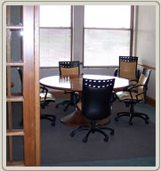
Are you just starting out or looking for a change and are in the market for a 2 bed 2 bath condo for rent in Cuyahoga Falls, Ohio? Sponsored by the Crucible Development Corporation, this beautiful Brookledge Commons condo is just the right size for a young couple, retired couple or for anyone who just … Continue reading “2 Bed 2 Bath Condo for Rent Cuyahoga Falls, OH”
Greg Stout is a freelance rotational molding designer who specializes in rotational molding design, blow molding design, thermoforming / vacuum forming design, and injection molding design. His company Blue Reed was set up for just that and Stout and his team can guide you through each step of the design process while creating a high … Continue reading “Rotational Molding”

With all the talk today about school safety, one thing that can be overlooked is school bus safety. For over twenty years, the School Bus Safety Company has been creating programs, videos and driver training courses to ensure that your most precious cargo is safe and prepared in case of an emergency. Located in Hudson, … Continue reading “School Bus Safety”

Want to make choosing leadership development programs and a business consultant in Findlay Ohio easier? Then choose Aegis 360 Consulting to make it that much simpler. Founder Ned Parks knows how important it is to incorporate the right leadership development program into a business and he and Aegis 360 want to help you do the … Continue reading “Leadership Development Programs | Business Consultant Findlay Ohio”
Ever think your business could use a business consultant around Mansfield, Ohio or you could use a leadership development program? Look to Aegis 360 Consulting to make your business into something bigger, better and more organized. They understand the amount of time, energy, and money you invest into your business. They want to help you … Continue reading “Business Consultant Mansfield Ohio | Leadership Development Program”
If you’re needing a DUI lawyer in Alliance, Ohio, contact Davis Elliot right away. DUI charges can impact your career and even the rest of your life. The lawyers at Davis Elliot, LLC understand this and will fight to protect your rights and represent you to the best of their ability. They are experienced lawyers … Continue reading “DUI Lawyer Alliance Ohio”

Wanting a reliable manufacturer for a Mustang crossmember? Well look no further with Advanced Resources’ product line, G Force Performance Products. They are made by car people, for car people. They understand that cars are not only a necessity but a livelihood as well. Specializing in the design and manufacture of automotive components and accessories … Continue reading “Mustang Crossmember & Mustang Upper Control Arms”
Criminal Defense Lawyer Ohio | Hiltner Law You would never think you would need one, but when it happens and you need a good criminal defense lawyer, contact Hiltner Law. He is an expert in criminal litigations and a defense lawyer. Hiltner has defined countless clients in a variety of cases. Clients range in the … Continue reading “Criminal Defense Lawyer Ohio | Ohio Defense Lawyer”
In need of traction bar, ladder bars and more? Southside Machines has what you need, whether it’s for drag racing or performance automotive aspects. Southside Machines’ label is carried by Advanced Resources, who specializes in complex product line manufacturing. From the latest in design engineering, through extreme tolerance CNC machinery, and multi-stage finishing processes, they have … Continue reading “Traction Bars from SSM”
Contractors Hub have a innovative and wonderful roofing software/siding estimating software available for use today. The software allows the user to automate their estimating and ordering processes. Build professional, accurate estimates in minutes and at the push of the button send the estimate to your customer, order job materials from your vendors, add to production … Continue reading “Roofing Software/Siding Estimating Software”

In need of a DUI lawyer in Barberton Ohio? Do you need experienced professionals who know what they are doing and can help you in the best way possible? Then you need the lawyers at the firm of Davis Elliot LLC. The last thing anyone wants to need is a DUI attorney, but if you … Continue reading “DUI Lawyer in Barberton Ohio | OVI Lawyer”

Needing an experienced business consultant in Wooster Ohio? Then Aegis 360® Consulting is the place for you. They can provide leadership coaching that will help your business evolve into things you never even thought possible. Since 2,000, the team at Aegis 360 has been working with companies and organizations, helping them with profit modeling, strategic … Continue reading “Business Consultant in Wooster Ohio”
Maxwell Hiltner | Criminal Defense Lawyer Ohio ADVAN Design has launched a website design for the BEST criminal defense attorney in Ohio, Maxwell Hiltner. Hiltner has a long list of successes in the courtroom. His website has been a big part of new clients finding great representation. When facing DUI, white collar crime, sex crime, … Continue reading “Criminal Defense Attorney Ohio – Hiltner Law”

In the market for some high quality, dependable ladder bars? If you do any kind of drag racing or high performance car work then you might recognize the name of Southside Machines. It’s been the number one brand of choice with mechanics and car enthusiasts for years. While the company is no longer around, it … Continue reading “Ladder Bars”
Are you worried about school bus safety for your school district or wish you had some sort of school bus safety video to show your students or children so they are more aware of the dangers around them? The School Bus Safety Company located in Hudson, Ohio has just that and more. For over twenty … Continue reading “School Bus Safety Video and School Bus Driver Training Videos”
In need of custom engraved awards and plaques? Come on down to Olympic Awards. They are a locally-owned business with over 30 years of experience, providing custom engraved plaques, trophies, clocks, nametags, crystal, medals and more. They serve Hudson, Aurora, Cuyahoga Falls, Stow, and other Northeast Ohio locations. Olympic Awards also offers the lowest pricing … Continue reading “Custom Engraved Awards And Plaques”

Greg Stout is the founder and owner of plastic design company, Blue Reed LLC, in Stow, Ohio and his company also offers rotational molding design guidelines to make sure your product is the best it can be. Blue Reed is no stranger to the plastic industry. Here are some tips that they have created over … Continue reading “Rotational Molding Design Guidelines”
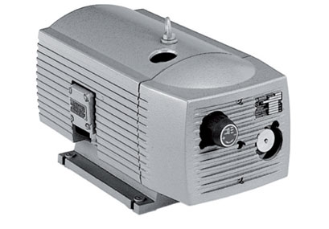
Since 1885, Becker has been manufacturing and developing technologies that position them as the number one choice for vacuum pumps, pressure pumps, compressors, regenerative blowers and central systems. Located in Cuyahoga Falls, Becker is local but does business across the country as well. One of their top products is the Becker rotary vane vacuum pump … Continue reading “Vacuum Pumps”
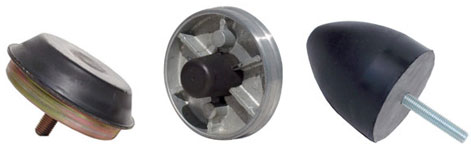
There are many things that make Qualiform stand out from other rubber companies. They have over 130 years combined of experience with their highly skilled technicians, they will help you design your rubber product every step of the way be it by drawing or consultation, and their products are 100% manufactured in the United States. … Continue reading “Rubber Companies | Rubber Company”
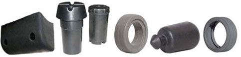
What makes Qualiform Rubber rise above the competition as leaders of rubber products distributors? It’s their dedication to providing excellent customer service, being flexible to fit any kind of rubber needs you may have and hiring only the best and most skilled team of technicians in the rubber field. They understand they’re are not the … Continue reading “Rubber Products Distributors”
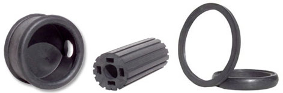
In 1976, Qualiform Rubber Inc. was established and has today become one of the top rubber manufacturing companies in the nation. They offer many services including rubber compression molding, custom transfer molding, custom rubber injection molding, and rubber to metal bonding. Whatever your needs are, Qualiform will be there to help. If you need help … Continue reading “Rubber Manufacturing Companies”
Western Reserve Chemical has many rubber accelerators fit for many processes, including CAS# 95-31-8. It is a TBBS accelerator for rubber with a delayed action accelerator for use in natural rubber and synthetic rubbers such as SBR, BR, NBR and EPDM. The WRCHEM accelerator is unique in that it has lower scorch than CBS and … Continue reading “CAS# 95-31-8”
Western Reserve Chemical is more than just a chemical company because they offer a full range of rubber accelerators to increase the speed of the vulcanization of rubber. They supply both primary and secondary accelerators that match perfectly with both natural rubber and synthetic rubber compounds including NR, CR, SBR, NBR, BR, EPDM and chlorobutyl … Continue reading “Rubber Accelerators”

Styrenated phenol both distyrenated and tristyrenated phenol are available in the extensive WESTCO™ product line. With Western Reserve Chemical, you get quality and assurance in all their products. Their SP-120 is FDA approved for use in rubber articles and parts intended for repeated or continuous food contacts. What it is is a pale yellow to … Continue reading “Styrenated Phenol”

Supplying chemicals and additives to compounders and formulators of rubber, plastics, adhesives, sealants and coatings and even a TBBS accelerator for rubber, Western Reserve Chemical has been a premiere company since 1979 that is highly renowned. With global sourcing and nine distribution warehouses, WESTCO can deliver high-quality and cost effective products that are used in … Continue reading “TBBS Accelerator For Rubber”

NEOPOP is Northeast Ohio’s leader in point of purchase displays. They specialize in producing cost-effective, high-impact custom point of purchase displays, or POP, and have been doing so for over 25 years. The company continues to develop smart, innovative designs and utilize manufacturing processes that allow them to develop the perfect displays to showcase your products. The … Continue reading “Point Of Purchase Displays”
When you are looking for a garage flooring contractor, look for father and son team Scott & Chad Gleske of Ohio Garage Interiors. The business is located in Strongsville, Ohio and they are the leading garage enhancement service in the area. At Ohio Garage Interiors, they know high-traffic spaces demand high-performance coating systems. The Ohio … Continue reading “Garage Flooring Contractor”

Aegis 360 Consulting is a global provider of business and leadership coaching and staff development services that help organizations improve leadership competencies, discover and align business strategies, and improve culture through employee engagement efforts. Started in 2000 by Ned Parks under the previous name of New Directions, Aegis 360 Consulting, Inc has been re-branded but has kept the high standard … Continue reading “Leadership Coaching”
Solon retail center, The Shoppes of Solon North, would like to welcome you to their shopping plaza! They have a variety of merchants for you and the whole family to choose from. With many different options and things to do, Solon North never disappoints in offering fun activities and products that satisfy a wide collection … Continue reading “Solon Retail Center”

DRM Wood Products, LTD would like to thank you for considering them as your woodworking company and for your OEM wood parts needs. They take pride in their reputation as one of the best woodworking companies in the Akron and Cleveland metropolitan areas. Their reliable service and skilled staff make DRM Wood Products stand out … Continue reading “Woodworking Company | Aron Ohio Woodworking”
In 1996, Harb Renovation and Restoration was founded to produce professional quality work for people seeking a home remodeling contractor who will take their projects to the next level. Located in Brecksville, Ohio, they bring nearly two decades of professional experience to the table. Whether you need basic improvements to your kitchen or bathroom or … Continue reading “Home Remodeling Contractor”

When you need an attorney in Medina, Ohio fast, you need Cameron B. Pedro. They provide representation for criminal defense cases, DUI, OVI, domestic, and personal injury claims. Cameron B. Pedro also serves the Brunswick, Wadsworth and surrounding areas, and provide a full range of legal services that also include divorce, child custody and child … Continue reading “Attorney In Medina, Ohio”
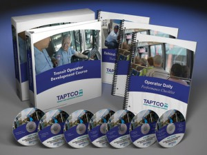
With president Jeff Cassell at the helm, Hudson based TAPTCO Transit and Paratransit Company has been offering renowned services with their bus driver training course and products including high quality videos and books for over twenty years. Previously their work had been private label and not available to district fleets until now. The Transit & … Continue reading “Bus Driver Training Course”
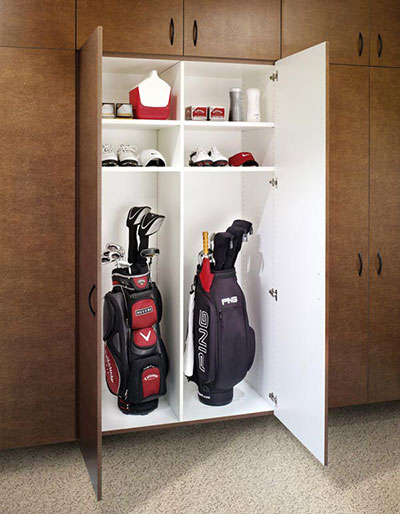
Transform your space with Ohio Garage Interior signature garage solutions like garage cabinets and storage solutions. The family owned company, started by Chad & Scott Gleske, gives your garage a new makeover and challenges what a normal garage can be with their quality products designed to handle the tough foot traffic and temperatures that a … Continue reading “Garage Cabinets”
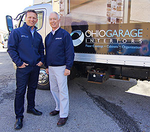
Locally owned and operated by the father and son team of Chad & Scott Gleske, Ohio Garage Interiors specializes in garage enhancement, which involves the installation of high-end polymer garage flooring coatings, cabinets and storage systems. With Ohio Garage Interiors, they can help you get organized and clean so you can focus on what really … Continue reading “Garage Flooring”
Located in Akron, Ohio, Malin Company Inc. offers specialty packaging and distribution of stainless steel wire. Since 1884, Malin Co. has also offered copper wire and safety lockwire that can be used in marine, brush, industrial or medical services. With many stainless steel wire to ANSI standards selections to choose from, they offer the best … Continue reading “Stainless Steel Wire”

Since 1948, Jaco Molding Products, an injection molding company in Ohio, has offered custom injection molding of thermoplastic materials up to 29 oz. Their reputation for injection mold technology has established Jaco Products as experts and leaders in production and precision plastic injection molding services and they also offer parts at a competitive price within … Continue reading “Plastic Injection Molding Companies | Ohio”

Greg Stout is a plastic product designer and freelancer with over twenty-five years experience in plastic product designing and over fourteen years experience in the rotational molding process. He is the head of Blue-Reed LLC, a plastic product design company located in Stow, Ohio and offers a variety of services with a vast network of … Continue reading “Plastic Product Designer”
Susan Perry, a retired federal agent, is an infidelity expert and now author, who wants you to recognize the signs of infidelity in your marriage or relationship. She has had personal experience with the issue by being married to a commercial airline pilot for over seven years, not thinking she would ever have to draw … Continue reading “Signs of Infidelity”
Thomas, Trattner & Malone LLC are the most experienced bankruptcy attorneys in Akron, Canton, Akron, Medina, and Youngstown, helping individuals and businesses find the best solution to their simple or complex financial situation. Comprised of four attorneys who each share background, education, experience and training in specific areas of the law, Thomas, Trattner & Malone … Continue reading “Bankruptcy Attorneys | Akron, Ohio”
The experts at the Transit & Paratransit Company (TAPTCO), located in Hudson, Ohio, have been designing bus driver training programs for bus drivers for more than 20 years. Until recently, their work has been private-labeled and not available to district bus fleets before. Now their award winning programs, including their breakthrough bus safety videos, are … Continue reading “Bus Driver Training”
Aegis 360 Consulting, Inc., formerly known as New Directions, was started in 2000 by Ned Parks who is a business consultant in Akron, Ohio with a focus on leadership/supervisory training and conflict mediation. The company is a global provider of business consulting and staff development services that help organizations improve their leadership, discover and better … Continue reading “Business Consultant In Akron Ohio”

David Corey is the owner of David Corey Photography and is a professional wedding photographer, experienced in capturing the most memorable moments of your wedding day. His goal is to create wonderful images that years down the road, will bring back those same emotions and thoughts that you had on that very special day. David … Continue reading “Wedding Photographer | Senior Photographer”

We’d like to introduce you to Western Reserve Chemical Corporation, who is a premier distributor of rubber chemicals and industrial intermediates. They provide a broad range of WESTCO brand chemicals including antioxidants, accelerators, tackifiers and retarders. Featuring 9 locations across the US to provide fast, convenient service of your rubber chemicals. From their nine distribution … Continue reading “Rubber Chemicals Manufacturer”

A plastics design takes precision and time. It takes skills that not many people have and it takes patience and diligence to complete. The person able to do just that, is Greg Stout. His company Blue Reed specializes in rotational molding design and plastics designs. Whether it’s rotational, injection or blow molding, Blue Reed has … Continue reading “Plastics Design”
Rubber seal products, rubber parts and gaskets are vital for preventing seepage of moisture or air. Trust Qualiform Rubber Inc., to handle all your rubber needs. They’ve been in the business since 1976 and their team has over 130 years combined experience and skill. No matter the application or the need, they provide a comprehensive … Continue reading “Rubber Seal Products”
At Ohio Garage Interiors, the team knows that garage organization can be a daunting task. With heavy footpath flow and extreme temperatures, the garage seems like it will never be a place to get de-cluttered or enjoy. Now, getting organized never looked so good! Ohio Garage Interiors wants you to see the potential it has … Continue reading “Garage Organization”

What other rubber manufacturer has over 130 years of combined experience with their technicians? Not many, that’s for sure. With Qualiform Rubber Inc., you get that level of experience plus more. You get quality, rock star service and 100% of their products being created in the United States. Whether Qualiform manufactures rubber parts like grommets, … Continue reading “Rubber Manufacturer”

Ohio Garage Interiors, started by father and son team Chad & Scott Gleske, has been serving the Northeast Ohio area with their quality products like epoxy garage flooring and storage solutions to fit any need you have to re-invent your garage. Their products are made to withstand the harsh elements of a garage environment but … Continue reading “Epoxy Garage Flooring”
Industrial rubber products can be complicated to get information on or can be expensive but that’s not the case with Qualiform Rubber. Since 1976, Qualiform has been offering rubber services in compression molding, custom rubber injection, and more to industries like aerospace, medical or home and appliance. With their versatile systems and expert crew, they … Continue reading “Industrial Rubber Products”
If you’ve ever wondered if you spouse or partner could be cheating, take Susan Perry’s infidelity test. It only takes five minutes and has twenty-four questions. Susan has had first had experience with infidelity when she was married to a commercial airline pilot for more than seven years. She never thought she would have to … Continue reading “Infidelity Test”
The School Bus Safety Company in Hudson, Ohio provides courses for school bus driver training.� The courses are built around high quality safety videos that change the behavior of drivers to avoid accidents and keep everyone safe. Recently, the School Bus Safety Company has re-created their driver training course and has added ten additional subjects … Continue reading “School Bus Driver Training | School Bus Training Courses”
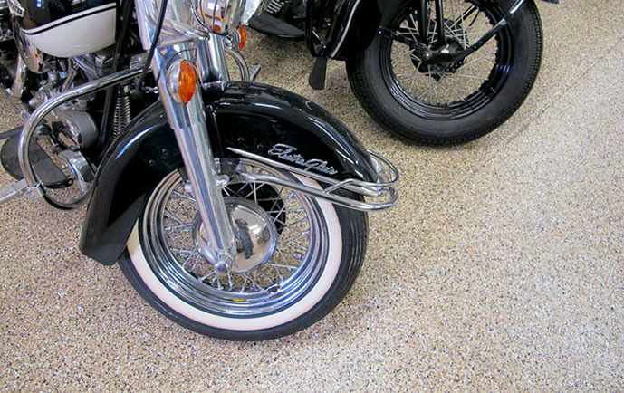
Ohio Garage Interiors was started by father and son, Chad & Scott Gleske, and it has risen to become the leading garage floor epoxy coating and storage solution companies in Northeast Ohio. With a variety of styles, colors, and installation options, garage flooring and organization has never been more stylish or affordable. Ohio Garage Interiors … Continue reading “Garage Floor Epoxy”
POP displays mean point of purchase. With NEOPOP, the leading manufacturer of POP displays in Northeast Ohio, they will make sure that your products are displayed properly and effectively as to boost your sales. With over 25 years experience, the team blends engineering, creativity, powerful marketing design and state-of-the-art manufacturing to deliver merchandising, POP displays and … Continue reading “POP Displays”

Qualiform is a rubber products molding company that offers quality rubber products. They can custom make the items you need using techniques like compression molding, custom transfer molding, custom rubber injection molding, and rubber to metal bonding by a staff with over 130 years combined knowledge in the field. Qualiform takes pride in what they … Continue reading “Rubber Products”

The best DUI/OVI lawyers in Canton Ohio are the ones from the Davis Law Group. With roots dating back to 1979, the Davis Law Group has been fighting for people’s rights and legal representation with the kind of care and skill that only an experienced law group can have. The team understands the value of … Continue reading “DUI Lawyer Canton Ohio / OVI Lawyer Canton”

Jaco Products is at the number spot on the list for plastic manufactures in Ohio. Since 1948, Jaco has been offering services in plastic injection molding, stamping, and has had over 56 years experience in precision plastic machining. The technical staff is highly skilled and can help you in many services along with the progressive … Continue reading “Ohio Plastic Companies | Plastic Manufacturers In Ohio”
The Law Office of Pedro Law. provides criminal defense advice and representation through their attorneys. Recently, their Pedro Law helped the owner of Medina Motorsports when he was facing criminal defense charges. The Medina, Ohio attorney Cameron B. Pedro are knowledgeable about how the courts work, even with domestic violence cases. If you are looking … Continue reading “Medina, Ohio Attorneys | Criminal Defense”
When looking for high quality and reliable rubber metal bonding parts, contact Qualiform today! They take all regulations within the industry you need the parts for and federal guidelines very seriously. The staff at Qualiform is well-trained in the area guaranteeing you will get a sturdy, reliable and quality product that meets the guidelines every time. Their goal … Continue reading “Rubber to Metal Bonding Parts | Qualiform”
When looking for a custom display for your product, contact NEOPOP. Custom metal working is great for a permanent point-or-purchase display to enhance the sales of your product. They can create durable and attractive displays based on your requirements and specifications. They have a variety of metal working items to help you display your product, … Continue reading “Metal Working | NEOPOP”
Looking for a way to display your product and get attention from customers? NEOPOP’s point of sale display can help reach your sales goals by creating a display unique to the product you are selling. They will help bring customers to your product through a custom display, which can be altered at anytime to keep … Continue reading “Point of Sale Display | NEOPOP”

For over twenty-five years, Greg Stout has been a plastic product designer and for over fourteen years, he has also been a rotational molding designer with his company Blue-Reed LLC. Located in Stow, Ohio, Stout and the experts Blue-Reed have worked to create a company that is innovative, experienced, and allows the client to access … Continue reading “Rotational Molding Designer”
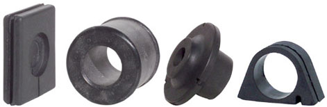
Since 1976, Qualiform has been the leader in rubber molding, with a staff that has over 130 years combined experience and knowledge. Their quality customer service has earned them an enviable reputation in care and satisfaction. Offering rubber compression molding, rubber transfer molding and rubber injection molding, and an extensive line of services such as … Continue reading “Rubber Molding”
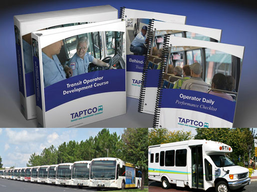
Taptco offers a bus driver training program to help your drivers be the safest on the streets. They strive to help drivers be safer, more efficient and be on time. There main focus is safety, but they train drivers in customer service as well. Taptco helps new and experience drivers feel confident in the decisions … Continue reading “Bus Driver Training Program”
If you are looking for the best and modern bus driver training courses, contact Taptco today. They offer twenty-eight different training course that come with comprehensive guides and course materials. The materials are up-to-date, and their courses are behavior-based to keep drivers interested. Taptco teaches drivers how to be confident with their actions, good customer service, … Continue reading “Bus Driver Training Courses”
A lawyer in Medina, Ohio cannot come more recommended than Cameron B. Pedro, a highly skilled lawyers that offer many services, the bulk of them being criminal defense, domestic and family law, juvenile, and personal injury. Whether going through a divorce, being accused of a crime or you have been in an accident, you need … Continue reading “Lawyer in Medina, Ohio”
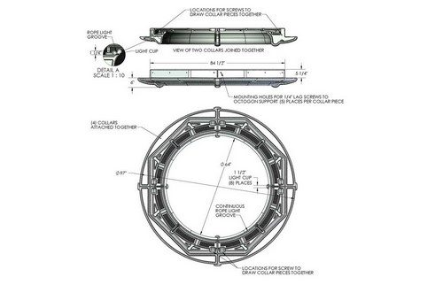
Rotational molding companies can offer wonderful services to your plastic product design in a unique way. Different from the regular plastic molding process, rotational molding requires certain molds for certain results and different tools than regular plastic molding. To find a designer and engineer can be tricky but look no further with Greg Stout and … Continue reading “Rotational Molding Companies”
Custom millworking from NEOPOP brings a professional appearance to your business. While working with NEOPOP, we have been able to learn more about NEOPOP and the custom millworking that they do so well. Displays, shelving, and kiosks, are all beautifully made with NEOPOP’s custom millworking whether they are manufactured in wood, glass, veneers, or a … Continue reading “Custom Millworking”
Laser Hair Removal Akron Ohio Physicians AquaFit proudly provides safe, affordable, and effective laser hair removal in Akron Ohio. This laser hair removal Akron Ohio, will comfortably remove the hair of anyone, regardless of skin tone or gender. Their versatile and smart technology at Physicians AquaFit, enables them to successfully gear the treatment to every … Continue reading “Laser Hair Removal Service Akron Ohio”
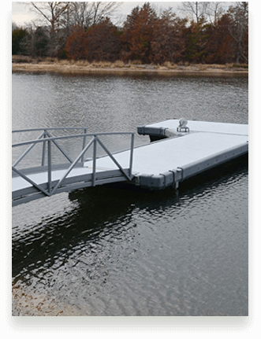
Rotational molding design can be a tricky business. Sometimes the results are not what you want them to be and other times, they more than you could ever want them to be. But in the hands of Greg Stout and his freelance company, Blue Reed, rotational molding design doesn’t have to be tricky. He has … Continue reading “Rotational Molding Design”
Whether you are looking to purchase or sell hydraulic truck cranes, Tom Kasner Crane Sales Inc. has the knowledge of the business and experience with the equipment to assist you and your project. Tom Kasner’s inventory of hydraulic truck cranes offers a selection of different makes and models of the past decade. If you can’t … Continue reading “Hydraulic Truck Cranes for Sale | Lattice Truck Cranes”
Tom Kasner Crane Sales Inc. has spent over 15 years supplying used cranes to the lifting industry and building lasting relationships with customers. If you are seeking all terrain cranes for sale, the approved inventory at Tom Kasner Crane Sales Inc. features an extensive variety of makes and models for different projects and applications. If … Continue reading “All Terrain Cranes for Sale from Tom Kasner Crane Sales, Inc.”
Through true integrity and proven credibility, Tom Kasner Crane Sales Inc has enjoyed more than 15 years of continued success providing used cranes to the lifting industry. Customers know they can rely on Tom Kasner’s 34 years of equipment experience and knowledge to help find the right used cranes for sale. With a vast pre-inspected … Continue reading “Used Cranes for Sale | Carry Deck, Hydraulic, All Terrain”
If you are seeking a bankruptcy Lawyer in Akron, Ohio with experience and success, look no further than Thomas, Trattner, Malone, LLC, a premier Northeast Ohio law firm of four educated and experienced attorneys. More than 50 years in combined experience between our esteemed attorneys that value unparalleled and reassuring professionalism and customer service. We … Continue reading “Bankruptcy Attorney Akron, Ohio | Thomas, Trattner, Malone LLC”